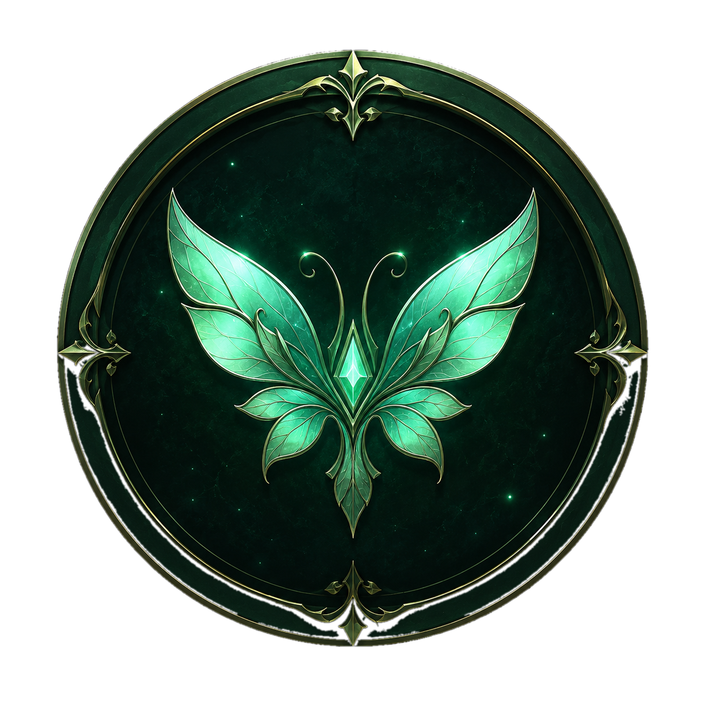

Faerie Fire will use this language everywhere — the interface and Faerie's own replies. 페어리 파이어의 화면과 페어리의 대답이 모두 이 언어로 표시돼요.
Step 1 of 2
Welcome to Faerie Fire
Faerie Fire runs on Claude, using your own Anthropic API key — nothing is shared
with anyone else and the key never leaves this computer. You can get one at
console.anthropic.com.
Step 2 of 2
Name your Soul
Everything in Faerie Fire — Roots, Branches, Leaves — grows underneath one Soul:
the overall direction, the kind of life and growth this map exists to support. You can always change
this later from Soul Calibration.
All set
Your Soul is planted
Faerie seeded one starter investigation — "Getting to know Faerie Fire" — under
Investigations, so there's something to answer on day one. Everything else grows from here: talk to Faerie
in Command Center, or watch the Growth tree fill in as you go.

Faerie Fire
Loading…
✦
Pick a photo or a scene that feels like you right now. The ambient effect layers softly over it.
Command Center
Growth
Investigations
Edit Soul Name
This changes the displayed name only. Your memories and Growth tree stay attached.
Restart to change language?
↓Drop files to attachImages, PDF, Word, Excel, text, Markdown, CSV, and JSON
✦ Command Center
Talk with Faerie here. This is the single chat surface; it can use memory, investigations, Growth context, attachments, and filing commands.
Loading the thread…
Ask Faerie to investigate a pattern
Give it a direction: “Try to understand why I avoid X” or “How does this memory relate to attachment theory?” It will use relevant memories, behavioral evidence, and existing beliefs.
Still forming · to appear
What I now believe about you
Ambiguous wording ("possibly a relative", "family-adjacent figure") still asks
you directly — only you know the answer. Objective date problems (a memory mentioning tech
from before it existed, an implausible age, a school grade that doesn't match your age) are
corrected automatically once a birth date is set below — the fix shows up under "Recently
resolved" tagged auto-fixed so you can double-check it. Select several open questions
to dismiss or answer together instead of one at a time.
Select a goal to see its plan, progress, and evidence.
Living Map
A lightweight constellation view of your existing Soul tree. It does not create new data yet — it helps you orient, then hands focus back to the normal Growth page.
Your evolution, oldest beliefs to newest — every fact placed at the date
it became true. Struck-through facts were later revised; the arrow shows when.
Drop journals or notes here (.md / .txt) — they're staged locally, entries
are split by date markers like "06/16", and nothing is sent anywhere until you run the
import. Files without a header get the year below for their dates.
Drop files here .md, .txt or .docx · staged into your local journal folder
Staged files
Memory hygiene
Merges near-duplicate memories (e.g. the same anecdote imported twice with
slightly different wording) and prunes stale rejections/evidence. Runs nightly on its own —
use this to tidy up right after a big import, before scanning Clarify.